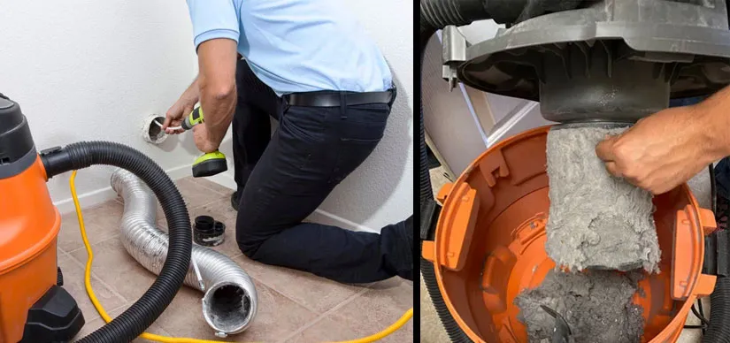

Main Reasons That You Should Invest In Dryer Vent Cleaning

There isn't much we wouldn't do to make and modify our home to suit our preferences. Further, there is always a new gadget or appliance that would fit perfectly in our kitchen. As a result, we frequently spend a ton of money on items we ultimately don't use or seldom use. However, there are other issues with the house that need our attention. One such item is the dryer vent's frequent and appropriate maintenance. Namely, people frequently overlook the simple fact that these vents just require dryer vent cleaning in san diego; if not, there are several possible concerns.
The pipes that connect your dryer to the exterior of your home are known as dryer vents or dryer ducts. It facilitates drying out and heating air. Your time, work, and money may be wasted if your dryer duct becomes filthy. More importantly, a dirty dryer duct poses a significant fire risk. It contributes significantly to home fires generally. A lint- and dust-filled dryer ducting system can seriously harm your house.
Benefits of using dryer vent cleaning
The effectiveness and danger level of your dryer may both be significantly improved by having a professional dryer vent cleaning clean your dryer vents. You will gain the following advantages from regular maintenance and dryer vent cleaning.
Saves you energy
The dust and dirt that collect in dryer vents become worse with time. As this dust and debris build-up, there is less space for expelled air to pass through. The dryer has to work more and harder to maintain operation as a result. Of course, this leads to a larger use of energy. So, if you want to save the most energy possible, you must clear out your dryer vent. The dryer won't experience unnecessary strain and won't need any more energy if the dryer vent is unblocked, allowing expelled air to flow freely. It's impossible to predict how much money cleaning your vents will save you on energy costs. However, remember that it will almost probably cost more than you would for a professional air duct cleaning in San Diego.
Dryer Fires
Built-up lint, clothing, animal houses, and a variety of other combustible materials can all clog your dryer. These things have the ability to absorb heat and compress it, starting a fire. Or the obstruction (the fire's fuel) might catch fire when a spark from the machine ignites it. These fires frequently result from electrical errors as well. Combining all of these risks with the potential for dryer fires can result in a dryer fire that ultimately burns down your house. Fortunately, you can stop destructive dryer fires brought by blocked vents with the assistance of duct cleaning in San diego.
Consider shorter drying times
The dryer will operate less effectively the more lint it gathers in the vent. Yes, it will still accomplish the task, but it will need a lot more effort. However, it's not only a waste of energy, so dryer vent cleaning in San Diego will help in tough times. Additionally, it will take longer. In rare instances, it could make it impossible for bedding or clothing to dry completely in a single cycle. This can require you to keep a close eye on your dryer and run it quickly since if you don't, your clothing and bedding might start to smell musty and look dirty. You may put off your wash load until the end of the day if you just get your dryer vent cleaned.
Maintain the appeal of your clothing for a longer
Your clothes lose a tiny amount of quality each time you dry them in the dryer. This is because heat damages the clothing's tiny fibers, causing them to expand and wear out. There isn't much you can do to stop this from happening right now, but you can take steps to slow down the process. In particular, you may routinely clean your dryer vent. A dryer that is inefficient has a filthy dryer vent. A less effective dryer must operate for a longer period of time. So your garments experience greater wear and tear every drying session when they are placed in an ineffective dryer.
Reduce the possibility of carbon monoxide poisoning
Do you prefer using a gas dryer to an electric one? If so, carbon monoxide poisoning is just another justification for cleaning your dryer vent. Gas dryers create carbon monoxide, but because they are connected to dryer vents, they can get rid of it barring, of course, clogged dryer vents. Carbon monoxide might back up into the dryer and be discharged into the house if the dryer vent is blocked, endangering everyone who lives there. You don't want to play around with carbon monoxide. It may even be lethal. So be sure to get the dryer vent cleaned from san diego air duct cleaning, once or twice a year.
Indoor Air Quality is Improved
Inefficient dryer vents and blocked air ducts are the two main sources of indoor air pollution. Over time, dust, allergies, air pollutants, and other hazardous materials can build up in the ducts and have a severe impact on the air quality. You'll have improved air quality for breathing and won't have respiratory issues thanks to your nearby dryer air duct services provider.
Your appliance must last for a very long period
Your dryer may overwork if there is lint clogged in the dryer vent. Additionally, when a dryer works harder, it will experience more wear and tear, which can diminish its efficiency and limit its lifespan. The dryer duct has to be maintained regularly to keep the machine running at peak efficiency for an extended length of time. Consequently, a pricey replacement is avoided.
Safeguard Your Investment
You can safeguard your investment by having a professional clean your dryer vents from dryer vent cleaning in San diego. Without even taking into account the possibility of losing a loved one to fire, homes are expensive, and a house fire may be catastrophic. Don't allow a small dryer clog ruin the house and family you've worked so hard and spent so much money to create.
Keep Your Favourite Clothes Safe
Your clothing's overall quality will decline if your dryer is not regularly cleaned. When the dryer vent is blocked, it produces additional heat, which can damage the fabric's elasticity. Your beloved shirt now has tears, picks, and holes in it. The issue has an easy fix. Before it damages all of your clothing, have your dryer cleaned so that you may benefit from dryer vent cleaning.
Safety is the most essential thing to us, therefore we want to ensure that all of our neighboursare aware of the significance of preventing clothes dryer fires. Professional dryer vent cleaning provides advantages that increase safety, increase machine longevity, and save utility costs.